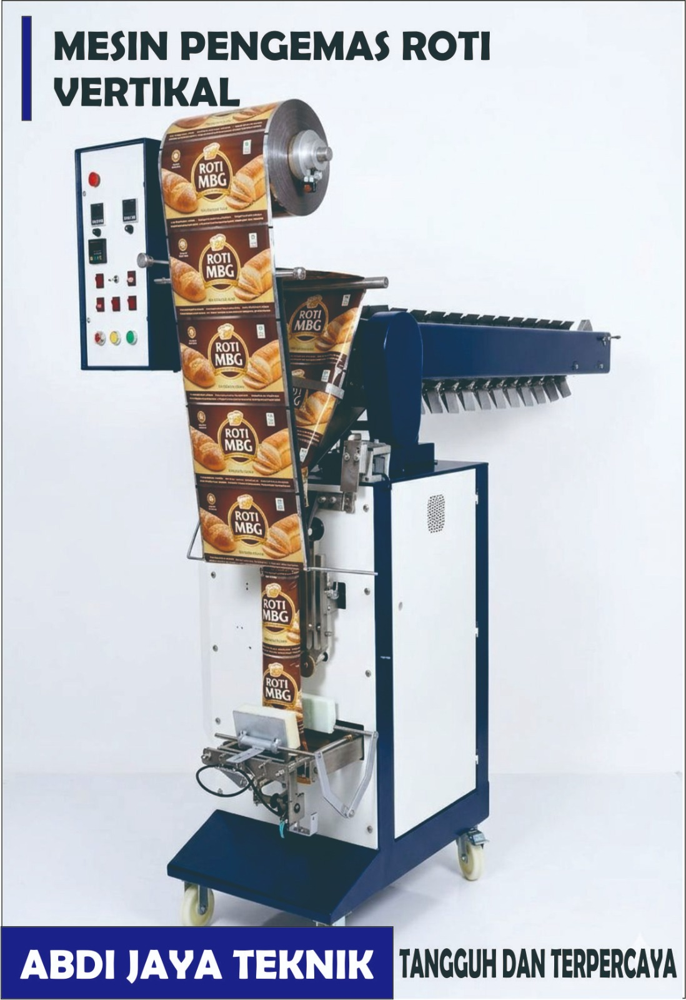

Mesin Pengemas Roti Type Vertical

Alternatif mesin pengemas roti yang lebih efisien untuk skala UMKM, dengan performa stabil untuk varian produk tertentu.
- Kecepatan: 20-45 kemasan/menit
- Kapasitas: hingga 50 gram
- Daya: 1.300 watt

Alternatif mesin pengemas roti yang lebih efisien untuk skala UMKM, dengan performa stabil untuk varian produk tertentu.